<!DOCTYPE html>
<html lang="en">
<head>
  <meta charset="utf-8">
  <meta name="viewport" content="width=device-width, initial-scale=1.0">
  <title>Unit_5 - Class 1 Mathematics</title>
  <style>

:root {
  --bg-color: #fcfcfd;
  --card-bg: #ffffff;
  --text-color: #1e293b;
  --text-muted: #64748b;
  --primary-color: #0284c7;
  --primary-light: #e0f2fe;
  --border-color: #e2e8f0;
  --radius: 10px;
  --shadow: 0 4px 6px -1px rgb(0 0 0 / 0.05), 0 2px 4px -2px rgb(0 0 0 / 0.05);
}

body {
  font-family: -apple-system, BlinkMacSystemFont, "Segoe UI", Roboto, "Noto Sans Malayalam", "Manjari", "Gayathri", sans-serif;
  background-color: var(--bg-color);
  color: var(--text-color);
  line-height: 1.8;
  font-size: 1.1rem;
  margin: 0;
  padding: 0;
}

.container {
  max-width: 860px;
  margin: 0 auto;
  padding: 2.5rem 1.5rem 5rem 1.5rem;
}

header {
  margin-bottom: 2.5rem;
  padding-bottom: 1.5rem;
  border-bottom: 2px solid var(--border-color);
}

.badge-row {
  display: flex;
  gap: 0.5rem;
  margin-bottom: 0.75rem;
  flex-wrap: wrap;
}

.badge {
  display: inline-block;
  font-size: 0.75rem;
  font-weight: 700;
  text-transform: uppercase;
  letter-spacing: 0.05em;
  padding: 0.25rem 0.65rem;
  border-radius: 9999px;
  background: var(--primary-light);
  color: var(--primary-color);
}

.badge-medium {
  background: #fef3c7;
  color: #b45309;
}

.badge-class {
  background: #dcfce7;
  color: #15803d;
}

h1 {
  font-size: 2.1rem;
  font-weight: 800;
  margin: 0.5rem 0 1rem 0;
  line-height: 1.3;
  color: #0f172a;
}

.nav-bar {
  display: flex;
  justify-content: space-between;
  margin: 1.5rem 0;
  font-size: 0.95rem;
  flex-wrap: wrap;
  gap: 0.5rem;
}

.nav-bar a {
  color: var(--primary-color);
  text-decoration: none;
  font-weight: 600;
  padding: 0.5rem 1rem;
  border-radius: var(--radius);
  background: var(--card-bg);
  border: 1px solid var(--border-color);
  transition: all 0.2s ease;
}

.nav-bar a:hover {
  background: var(--primary-light);
  border-color: var(--primary-color);
}

.nav-bar .disabled {
  color: var(--text-muted);
  pointer-events: none;
  border-color: transparent;
  background: transparent;
}

.page-section {
  background: var(--card-bg);
  border: 1px solid var(--border-color);
  border-radius: var(--radius);
  box-shadow: var(--shadow);
  padding: 2rem;
  margin-bottom: 2.5rem;
}

.page-header {
  display: flex;
  align-items: center;
  justify-content: space-between;
  margin-bottom: 1.25rem;
  padding-bottom: 0.5rem;
  border-bottom: 1px dashed var(--border-color);
}

.page-number {
  font-size: 0.8rem;
  font-weight: 700;
  text-transform: uppercase;
  color: var(--text-muted);
  letter-spacing: 0.05em;
}

.page-content p {
  margin: 0 0 1.25rem 0;
  white-space: pre-wrap;
  word-break: break-word;
}

.page-content p:last-child {
  margin-bottom: 0;
}

.diagram-card {
  margin: 2rem 0;
  text-align: center;
  background: #f8fafc;
  border: 1px solid var(--border-color);
  border-radius: var(--radius);
  padding: 1rem;
  overflow: hidden;
}

.diagram-card img {
  max-width: 100%;
  height: auto;
  border-radius: calc(var(--radius) - 4px);
  display: inline-block;
  box-shadow: 0 2px 4px rgba(0,0,0,0.04);
}

.diagram-card figcaption {
  font-size: 0.85rem;
  color: var(--text-muted);
  margin-top: 0.75rem;
  font-weight: 500;
}

footer {
  margin-top: 3rem;
  padding-top: 2rem;
  border-top: 2px solid var(--border-color);
}

  </style>
</head>
<body>
  <div class="container">
    <header>
      <div class="badge-row">
        <span class="badge badge-class">Class 1</span>
        <span class="badge badge-medium">English Medium</span>
        <span class="badge">Mathematics</span>
        <span class="badge">Part 1</span>
      </div>
      <h1>Unit_5</h1>
      <div class="nav-bar"><a href="part_1_unit_4.html">← Unit_4</a><a href="index.html">☰ Index</a><span class="nav-bar disabled"></span></div>
    </header>
    <main>
      <section class="page-section" id="page-81">
  <div class="page-header"><span class="page-number">Page 81</span></div>
  <figure class="diagram-card" id="fig_ch04_p081_01">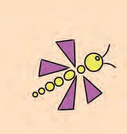<figcaption>Figure fig_ch04_p081_01 (Page 81)</figcaption></figure>
  <figure class="diagram-card" id="fig_ch04_p081_02">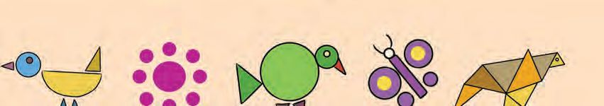<figcaption>Figure fig_ch04_p081_02 (Page 81)</figcaption></figure>
  <figure class="diagram-card" id="fig_ch04_p081_03"><figcaption>Figure fig_ch04_p081_03 (Page 81)</figcaption></figure>
  <figure class="diagram-card" id="fig_ch04_p081_04"><figcaption>Figure fig_ch04_p081_04 (Page 81)</figcaption></figure>
  <figure class="diagram-card" id="fig_ch04_p081_05">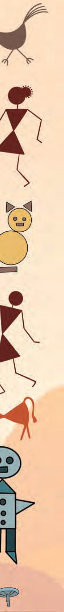<figcaption>Figure fig_ch04_p081_05 (Page 81)</figcaption></figure>
  <figure class="diagram-card" id="fig_ch04_p081_06"><figcaption>Figure fig_ch04_p081_06 (Page 81)</figcaption></figure>
  <figure class="diagram-card" id="fig_ch04_p081_07"><figcaption>Figure fig_ch04_p081_07 (Page 81)</figcaption></figure>
  <figure class="diagram-card" id="fig_ch04_p081_08">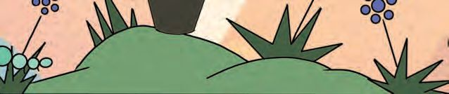<figcaption>Figure fig_ch04_p081_08 (Page 81)</figcaption></figure>
  <figure class="diagram-card" id="fig_ch04_p081_09"><figcaption>Figure fig_ch04_p081_09 (Page 81)</figcaption></figure>
  <figure class="diagram-card" id="fig_ch04_p081_10"><figcaption>Figure fig_ch04_p081_10 (Page 81)</figcaption></figure>
  <figure class="diagram-card" id="fig_ch04_p081_11">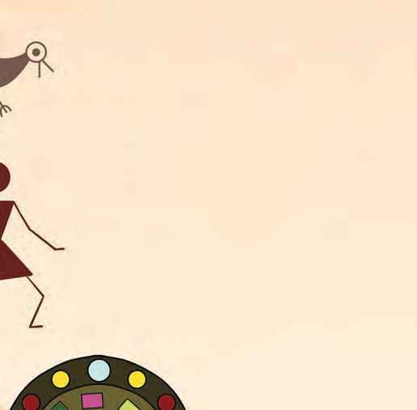<figcaption>Figure fig_ch04_p081_11 (Page 81)</figcaption></figure>
  <figure class="diagram-card" id="fig_ch04_p081_12"><figcaption>Figure fig_ch04_p081_12 (Page 81)</figcaption></figure>
  <figure class="diagram-card" id="fig_ch04_p081_13">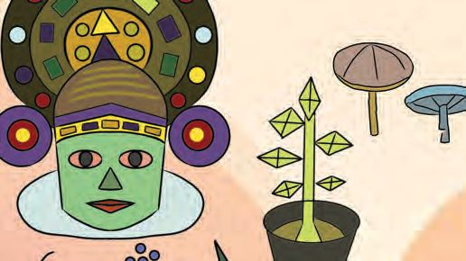<figcaption>Figure fig_ch04_p081_13 (Page 81)</figcaption></figure>
  <figure class="diagram-card" id="fig_ch04_p081_14"><figcaption>Figure fig_ch04_p081_14 (Page 81)</figcaption></figure>
  <figure class="diagram-card" id="fig_ch04_p081_15"><figcaption>Figure fig_ch04_p081_15 (Page 81)</figcaption></figure>
  <figure class="diagram-card" id="fig_ch04_p081_16">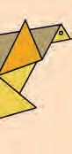<figcaption>Figure fig_ch04_p081_16 (Page 81)</figcaption></figure>
  <figure class="diagram-card" id="fig_ch04_p081_17"><figcaption>Figure fig_ch04_p081_17 (Page 81)</figcaption></figure>
  <figure class="diagram-card" id="fig_ch04_p081_18"><figcaption>Figure fig_ch04_p081_18 (Page 81)</figcaption></figure>
  <figure class="diagram-card" id="fig_ch04_p081_19"><figcaption>Figure fig_ch04_p081_19 (Page 81)</figcaption></figure>
  <figure class="diagram-card" id="fig_ch04_p081_20">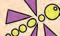<figcaption>Figure fig_ch04_p081_20 (Page 81)</figcaption></figure>
  <figure class="diagram-card" id="fig_ch04_p081_21"><figcaption>Figure fig_ch04_p081_21 (Page 81)</figcaption></figure>
  <figure class="diagram-card" id="fig_ch04_p081_22"><figcaption>Figure fig_ch04_p081_22 (Page 81)</figcaption></figure>
  <figure class="diagram-card" id="fig_ch04_p081_23"><figcaption>Figure fig_ch04_p081_23 (Page 81)</figcaption></figure>
  <figure class="diagram-card" id="fig_ch04_p081_24">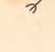<figcaption>Figure fig_ch04_p081_24 (Page 81)</figcaption></figure>
  <figure class="diagram-card" id="fig_ch04_p081_25"><figcaption>Figure fig_ch04_p081_25 (Page 81)</figcaption></figure>
  <figure class="diagram-card" id="fig_ch04_p081_26">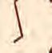<figcaption>Figure fig_ch04_p081_26 (Page 81)</figcaption></figure>
  <figure class="diagram-card" id="fig_ch04_p081_27"><figcaption>Figure fig_ch04_p081_27 (Page 81)</figcaption></figure>
  <figure class="diagram-card" id="fig_ch04_p081_28"><figcaption>Figure fig_ch04_p081_28 (Page 81)</figcaption></figure>
  <figure class="diagram-card" id="fig_ch04_p081_29"><figcaption>Figure fig_ch04_p081_29 (Page 81)</figcaption></figure>
  <figure class="diagram-card" id="fig_ch04_p081_30">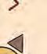<figcaption>Figure fig_ch04_p081_30 (Page 81)</figcaption></figure>
  <figure class="diagram-card" id="fig_ch04_p081_31"><figcaption>Figure fig_ch04_p081_31 (Page 81)</figcaption></figure>
  <figure class="diagram-card" id="fig_ch04_p081_32"><figcaption>Figure fig_ch04_p081_32 (Page 81)</figcaption></figure>
  <figure class="diagram-card" id="fig_ch04_p081_33"><figcaption>Figure fig_ch04_p081_33 (Page 81)</figcaption></figure>
  <figure class="diagram-card" id="fig_ch04_p081_34"><figcaption>Figure fig_ch04_p081_34 (Page 81)</figcaption></figure>
  <figure class="diagram-card" id="fig_ch04_p081_35"><figcaption>Figure fig_ch04_p081_35 (Page 81)</figcaption></figure>
  <figure class="diagram-card" id="fig_ch04_p081_36"><figcaption>Figure fig_ch04_p081_36 (Page 81)</figcaption></figure>
  <figure class="diagram-card" id="fig_ch04_p081_37"><figcaption>Figure fig_ch04_p081_37 (Page 81)</figcaption></figure>
  <div class="page-content">
    <p>5
Fun with Shapes</p>
    <p>81</p>
  </div>
</section><section class="page-section" id="page-82">
  <div class="page-header"><span class="page-number">Page 82</span></div>
  <figure class="diagram-card" id="fig_ch04_p082_01"><figcaption>Figure fig_ch04_p082_01 (Page 82)</figcaption></figure>
  <figure class="diagram-card" id="fig_ch04_p082_02"><figcaption>Figure fig_ch04_p082_02 (Page 82)</figcaption></figure>
  <figure class="diagram-card" id="fig_ch04_p082_03"><figcaption>Figure fig_ch04_p082_03 (Page 82)</figcaption></figure>
  <figure class="diagram-card" id="fig_ch04_p082_04"><figcaption>Figure fig_ch04_p082_04 (Page 82)</figcaption></figure>
  <figure class="diagram-card" id="fig_ch04_p082_05"><figcaption>Figure fig_ch04_p082_05 (Page 82)</figcaption></figure>
  <figure class="diagram-card" id="fig_ch04_p082_06"><figcaption>Figure fig_ch04_p082_06 (Page 82)</figcaption></figure>
  <figure class="diagram-card" id="fig_ch04_p082_07"><figcaption>Figure fig_ch04_p082_07 (Page 82)</figcaption></figure>
  <figure class="diagram-card" id="fig_ch04_p082_08"><figcaption>Figure fig_ch04_p082_08 (Page 82)</figcaption></figure>
  <div class="page-content">
    <p>Dad making Dosa</p>
    <p>Dosa, dosa!
Hissing dosa
Sizzling dosa
Dad making dosa
Mom serving dosa
Small and round dosa
Nice and tasty dosa</p>
    <p>Let‛s draw a dosa.
Join the dots.</p>
    <p>82</p>
    <p>Now draw by yourself.</p>
  </div>
</section><section class="page-section" id="page-83">
  <div class="page-header"><span class="page-number">Page 83</span></div>
  <figure class="diagram-card" id="fig_ch04_p083_01"><figcaption>Figure fig_ch04_p083_01 (Page 83)</figcaption></figure>
  <figure class="diagram-card" id="fig_ch04_p083_02"><figcaption>Figure fig_ch04_p083_02 (Page 83)</figcaption></figure>
  <div class="page-content">
    <p>Dad ate seven
Mom ate six
Rini ate four
Ryan ate two
Tutu cat one</p>
    <p>Write the number of dosas.
Dad</p>
    <p>Mom</p>
    <p>Total</p>
    <p>Rini</p>
    <p>Ryan</p>
    <p>Total</p>
    <p>Dad
and mom
together ate</p>
    <p>Rini and
Ryan
together ate</p>
    <p>Tutu cat
ate</p>
    <p>Total</p>
    <p>Write the names and calculate.</p>
    <p>...............ate</p>
    <p>Total</p>
    <p>...............ate</p>
    <p>...............ate</p>
    <p>...............ate</p>
    <p>...............ate</p>
    <p>Total</p>
    <p>10</p>
    <p>10</p>
    <p>83</p>
  </div>
</section><section class="page-section" id="page-84">
  <div class="page-header"><span class="page-number">Page 84</span></div>
  <figure class="diagram-card" id="fig_ch04_p084_01">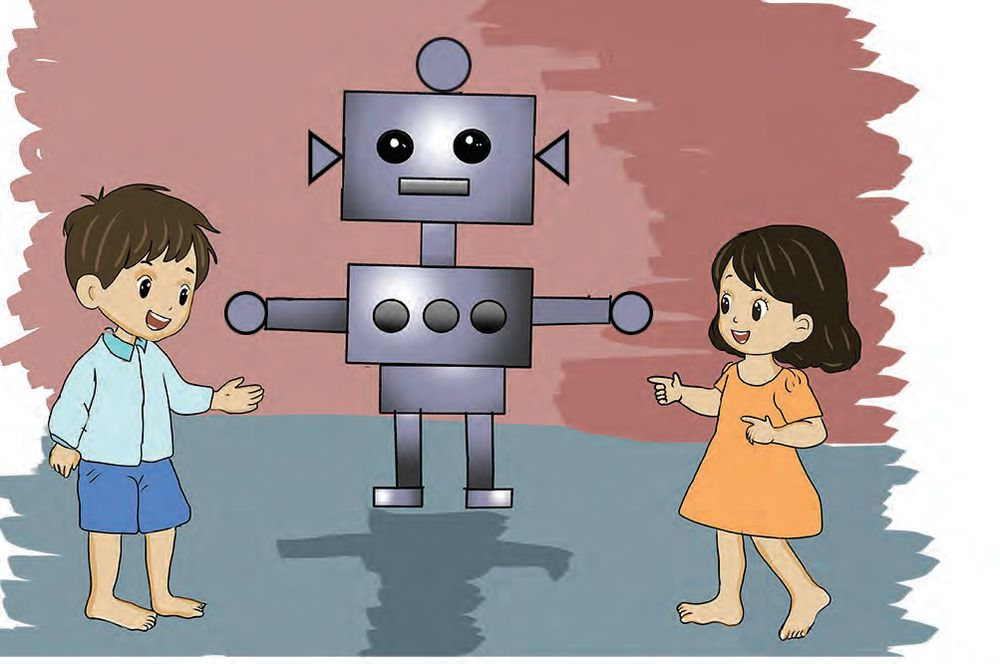<figcaption>Figure fig_ch04_p084_01 (Page 84)</figcaption></figure>
  <div class="page-content">
    <p>Robot
Wow! My
robot!</p>
    <p>There are
circles on it
too!</p>
    <p>How many circles?
Join the dots and colour.</p>
    <p>84</p>
  </div>
</section><section class="page-section" id="page-85">
  <div class="page-header"><span class="page-number">Page 85</span></div>
  <figure class="diagram-card" id="fig_ch04_p085_01"><figcaption>Figure fig_ch04_p085_01 (Page 85)</figcaption></figure>
  <figure class="diagram-card" id="fig_ch04_p085_02"><figcaption>Figure fig_ch04_p085_02 (Page 85)</figcaption></figure>
  <figure class="diagram-card" id="fig_ch04_p085_03"><figcaption>Figure fig_ch04_p085_03 (Page 85)</figcaption></figure>
  <div class="page-content">
    <p>Missing parts</p>
    <p>See the doggie in the picture?
Draw the missing parts
in the picture below.</p>
    <p>85</p>
  </div>
</section><section class="page-section" id="page-86">
  <div class="page-header"><span class="page-number">Page 86</span></div>
  <figure class="diagram-card" id="fig_ch04_p086_01"><figcaption>Figure fig_ch04_p086_01 (Page 86)</figcaption></figure>
  <figure class="diagram-card" id="fig_ch04_p086_02"><figcaption>Figure fig_ch04_p086_02 (Page 86)</figcaption></figure>
  <figure class="diagram-card" id="fig_ch04_p086_03"><figcaption>Figure fig_ch04_p086_03 (Page 86)</figcaption></figure>
  <figure class="diagram-card" id="fig_ch04_p086_04"><figcaption>Figure fig_ch04_p086_04 (Page 86)</figcaption></figure>
  <div class="page-content">
    <p>Dot drawing
There‛s snack
which looks
like this.</p>
    <p>Join the dots and colour.</p>
    <p>86</p>
    <p>Yeah...
Samosa!</p>
  </div>
</section><section class="page-section" id="page-87">
  <div class="page-header"><span class="page-number">Page 87</span></div>
  <div class="page-content">
    <p>Around home</p>
    <p>Look at the picture above and
colour the one below.</p>
    <p>How many?
Write.</p>
    <p>87</p>
  </div>
</section><section class="page-section" id="page-88">
  <div class="page-header"><span class="page-number">Page 88</span></div>
  <div class="page-content">
    <p>Draw and colour.</p>
    <p>88</p>
  </div>
</section><section class="page-section" id="page-89">
  <div class="page-header"><span class="page-number">Page 89</span></div>
  <figure class="diagram-card" id="fig_ch04_p089_01">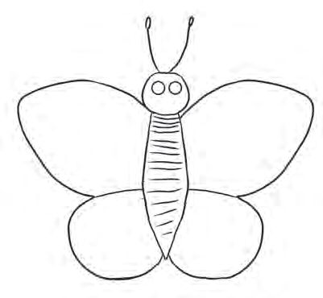<figcaption>Figure fig_ch04_p089_01 (Page 89)</figcaption></figure>
  <figure class="diagram-card" id="fig_ch04_p089_02"><figcaption>Figure fig_ch04_p089_02 (Page 89)</figcaption></figure>
  <figure class="diagram-card" id="fig_ch04_p089_03"><figcaption>Figure fig_ch04_p089_03 (Page 89)</figcaption></figure>
  <div class="page-content">
    <p>Draw, colour and write.
Draw matching shapes
on the right wings.
How many circles in all?</p>
    <p>How did you find out?
And your friends?
How I
found</p>
    <p>Other ways</p>
    <p>5+5</p>
    <p>= 10</p>
    <p>..................</p>
    <p>10 +3</p>
    <p>= 13</p>
    <p>..................</p>
    <p>13 + 3 = ......</p>
    <p>..................</p>
    <p>How many dots on the
right wing?
Draw as many dots on
the left wing.</p>
    <p>On the
left wing</p>
    <p>On the
right wing</p>
    <p>Total</p>
    <p>89</p>
  </div>
</section><section class="page-section" id="page-90">
  <div class="page-header"><span class="page-number">Page 90</span></div>
  <div class="page-content">
    <p>Colour the next.</p>
    <p>Let‛s make.
Look at the shapes in the picture on the left.
Colour only these in the picture in the right.</p>
    <p>90</p>
  </div>
</section><section class="page-section" id="page-91">
  <div class="page-header"><span class="page-number">Page 91</span></div>
  <div class="page-content">
    <p>Vehicles
Colour the pictures.</p>
    <p>Count and write.
Vehicle</p>
    <p>Total</p>
    <p>91</p>
  </div>
</section><section class="page-section" id="page-92">
  <div class="page-header"><span class="page-number">Page 92</span></div>
  <div class="page-content">
    <p>Draw the next.
Draw the next figure in each.</p>
    <p>92</p>
  </div>
</section><section class="page-section" id="page-93">
  <div class="page-header"><span class="page-number">Page 93</span></div>
  <figure class="diagram-card" id="fig_ch04_p093_01">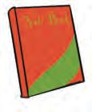<figcaption>Figure fig_ch04_p093_01 (Page 93)</figcaption></figure>
  <figure class="diagram-card" id="fig_ch04_p093_02">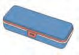<figcaption>Figure fig_ch04_p093_02 (Page 93)</figcaption></figure>
  <figure class="diagram-card" id="fig_ch04_p093_03">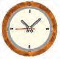<figcaption>Figure fig_ch04_p093_03 (Page 93)</figcaption></figure>
  <figure class="diagram-card" id="fig_ch04_p093_04">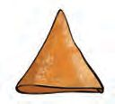<figcaption>Figure fig_ch04_p093_04 (Page 93)</figcaption></figure>
  <figure class="diagram-card" id="fig_ch04_p093_05">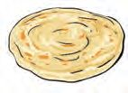<figcaption>Figure fig_ch04_p093_05 (Page 93)</figcaption></figure>
  <figure class="diagram-card" id="fig_ch04_p093_06">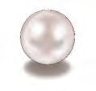<figcaption>Figure fig_ch04_p093_06 (Page 93)</figcaption></figure>
  <figure class="diagram-card" id="fig_ch04_p093_07">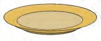<figcaption>Figure fig_ch04_p093_07 (Page 93)</figcaption></figure>
  <figure class="diagram-card" id="fig_ch04_p093_08"><figcaption>Figure fig_ch04_p093_08 (Page 93)</figcaption></figure>
  <figure class="diagram-card" id="fig_ch04_p093_09"><figcaption>Figure fig_ch04_p093_09 (Page 93)</figcaption></figure>
  <div class="page-content">
    <p>Connections
Connect each figure at the centre to objects of the
same shape.</p>
    <p>Draw any object of the same shapes
seen around you.</p>
    <p>93</p>
  </div>
</section><section class="page-section" id="page-94">
  <div class="page-header"><span class="page-number">Page 94</span></div>
  <figure class="diagram-card" id="fig_ch04_p094_01">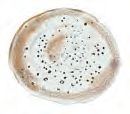<figcaption>Figure fig_ch04_p094_01 (Page 94)</figcaption></figure>
  <figure class="diagram-card" id="fig_ch04_p094_02"><figcaption>Figure fig_ch04_p094_02 (Page 94)</figcaption></figure>
  <figure class="diagram-card" id="fig_ch04_p094_03">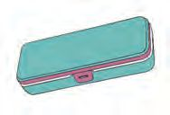<figcaption>Figure fig_ch04_p094_03 (Page 94)</figcaption></figure>
  <figure class="diagram-card" id="fig_ch04_p094_04">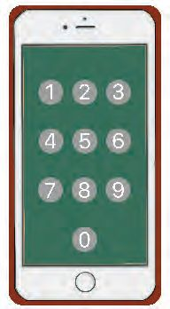<figcaption>Figure fig_ch04_p094_04 (Page 94)</figcaption></figure>
  <figure class="diagram-card" id="fig_ch04_p094_05">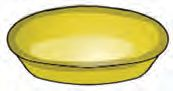<figcaption>Figure fig_ch04_p094_05 (Page 94)</figcaption></figure>
  <figure class="diagram-card" id="fig_ch04_p094_06">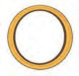<figcaption>Figure fig_ch04_p094_06 (Page 94)</figcaption></figure>
  <figure class="diagram-card" id="fig_ch04_p094_07"><figcaption>Figure fig_ch04_p094_07 (Page 94)</figcaption></figure>
  <figure class="diagram-card" id="fig_ch04_p094_08"><figcaption>Figure fig_ch04_p094_08 (Page 94)</figcaption></figure>
  <figure class="diagram-card" id="fig_ch04_p094_09">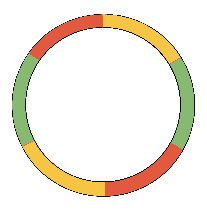<figcaption>Figure fig_ch04_p094_09 (Page 94)</figcaption></figure>
  <figure class="diagram-card" id="fig_ch04_p094_10">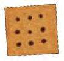<figcaption>Figure fig_ch04_p094_10 (Page 94)</figcaption></figure>
  <figure class="diagram-card" id="fig_ch04_p094_11"><figcaption>Figure fig_ch04_p094_11 (Page 94)</figcaption></figure>
  <div class="page-content">
    <p>Song of shapes</p>
    <p>What is round? What is round?
Dosa is round! Dosa is round!
What is round? What is round?
Bangle is round! Bangle is round!</p>
    <p>................... ..................... .....................
................... ..................... .....................
What is oblong? What is oblong?
Box is oblong! Box is oblong!
What is oblong? What is oblong?
Biscuit‛s oblong! Biscuit‛s oblong!</p>
    <p>................... ..................... .....................
................... ..................... .....................</p>
    <p>94</p>
  </div>
</section><section class="page-section" id="page-95">
  <div class="page-header"><span class="page-number">Page 95</span></div>
  <div class="page-content">
    <p>CONSTITUTION OF INDIA
Part IV A</p>
    <p>FUNDAMENTAL DUTIES OF CITIZENS</p>
    <p>ARTICLE 51 A
)XQGDPHQWDO&#x27;XWLHV,WVKDOOEHWKHGXW\RIHYHU\FLWL]HQRI,QGLD
(a) to abide by the Constitution and respect its ideals and institutions,
the National Flag and the National Anthem;
(b) to cherish and follow the noble ideals which inspired our national struggle
for freedom;
(c) to uphold and protect the sovereignty, unity and integrity of India;
(d) to defend the country and render national service when called upon to do so;
(e) to promote harmony and the spirit of common brotherhood amongst all the
people of India transcending religious, linguistic and regional or sectional
diversities; to renounce practices derogatory to the dignity of women;
(f) to value and preserve the rich heritage of our composite culture;
(g) to protect and improve the natural environment including forests, lakes, rivers,
wild life and to have compassion for living creatures;
(h) to develop the scientific temper, humanism and the spirit of inquiry and reform;
(i)</p>
    <p>to safeguard public property and to abjure violence;</p>
    <p>(j) to strive towards excellence in all spheres of individual and collective activity
so that the nation constantly rises to higher levels of endeavour and
achievements;
(k) who is a parent or guardian to provide opportunities for education to his child or,
as the case may be, ward between age of six and fourteen years.</p>
  </div>
</section><section class="page-section" id="page-96">
  <div class="page-header"><span class="page-number">Page 96</span></div>
  <figure class="diagram-card" id="fig_ch04_p096_01"><figcaption>Figure fig_ch04_p096_01 (Page 96)</figcaption></figure>
  <div class="page-content">
    <p>CHILDREN&#x27;S RIGHTS
Dear Children,
Wouldn’t you like to know about your rights? Awareness about your rights will inspire
and motivate you to ensure your protection and participation, thereby making social
justice a reality. You may know that a commission for child rights is functioning in our
state called the Kerala State Commission for Protection of Child Rights.
Let’s see what your rights are:</p>
    <p>‡ 5LJKW WR IUHHGRP RI VSHHFK DQG
H[SUHVVLRQ
‡ 5LJKWWROLIHDQGOLEHUW\
‡ 5LJKW WR PD[LPXP VXUYLYDO DQG
GHYHORSPHQW
‡ 5LJKW WR EH UHVSHFWHG DQG DFFHSWHG
UHJDUGOHVV RI FDVWH FUHHG DQG FRORXU</p>
    <p>‡ 3URWHFWLRQ DJDLQVW QHJOHFW
‡ 5LJKW WR IUHH DQG FRPSXOVRU\
HGXFDWLRQ
‡ 5LJKWWROHDUQUHVWDQGOHLVXUH
‡ 5LJKW WR SDUHQWDO DQG VRFLHWDO FDUH
DQG SURWHFWLRQ</p>
    <p>0DMRU5HVSRQVLELOLWLHV</p>
    <p>‡ 5LJKW WR SURWHFWLRQ DQG FDUH DJDLQVW
SK\VLFDO PHQWDO DQG VH[XDO DEXVH</p>
    <p>‡ 3URWHFW VFKRRO DQG SXEOLF IDFLOLWLHV</p>
    <p>‡ 5LJKW WR SDUWLFLSDWLRQ</p>
    <p>‡ 2EVHUYH SXQFWXDOLW\ LQ OHDUQLQJ
DQGDFWLYLWLHVRIWKHVFKRRO</p>
    <p>‡ 3URWHFWLRQ IURP FKLOG ODERXU DQG
KD]DUGRXV ZRUN
‡ 3URWHFWLRQ DJDLQVW FKLOG PDUULDJH
‡ 5LJKW WR NQRZ RQH·V FXOWXUH DQG OLYH
DFFRUGLQJO\</p>
    <p>‡ $FFHSW DQG UHVSHFW VFKRRO
DXWKRULWLHV WHDFKHUV SDUHQWV DQG
IHOORZ VWXGHQWV
‡ 5HDGLQHVV WR DFFHSW DQG UHVSHFW
RWKHUV UHJDUGOHVV RI FDVWH FUHHG RU
FRORXU</p>
    <p>Contact Address:</p>
    <p>.HUDOD6WDWH&amp;RPPLVVLRQIRU3URWHFWLRQRI&amp;KLOG5LJKWV
&#x27;Sree Ganesh&#x27;, T. C. 14/2036, Vanross Junction
Kerala University P. O., Thiruvananthapuram - 34, Phone : 0471 - 2326603
Email: childrights.cpcr@kerala.gov.in, rte.cpcr@kerala.gov.in
Website : www.kescpcr.kerala.gov.in
&amp;KLOG+HOSOLQH&amp;ULPH6WRSSHU1LUEKD\D
.HUDOD3ROLFH+HOSOLQH</p>
    <p>Online R. T. E Monitoring : www.nireekshana.org.in</p>
  </div>
</section>
    </main>
    <footer>
      <div class="nav-bar"><a href="part_1_unit_4.html">← Unit_4</a><a href="index.html">☰ Index</a><span class="nav-bar disabled"></span></div>
      <p style="text-align: center; font-size: 0.85rem; color: var(--text-muted); margin-top: 2rem;">
        Kerala SCERT Class 1 Mathematics (English Medium) - Extracted Study Text
      </p>
    </footer>
  </div>
</body>
</html>
